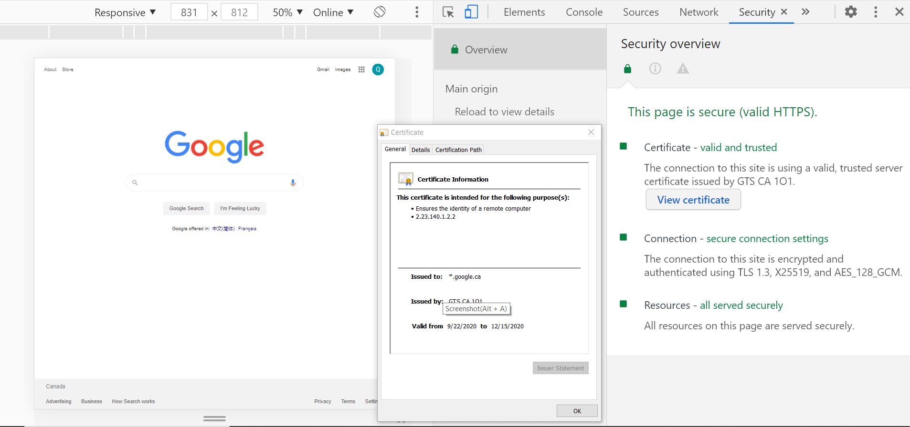
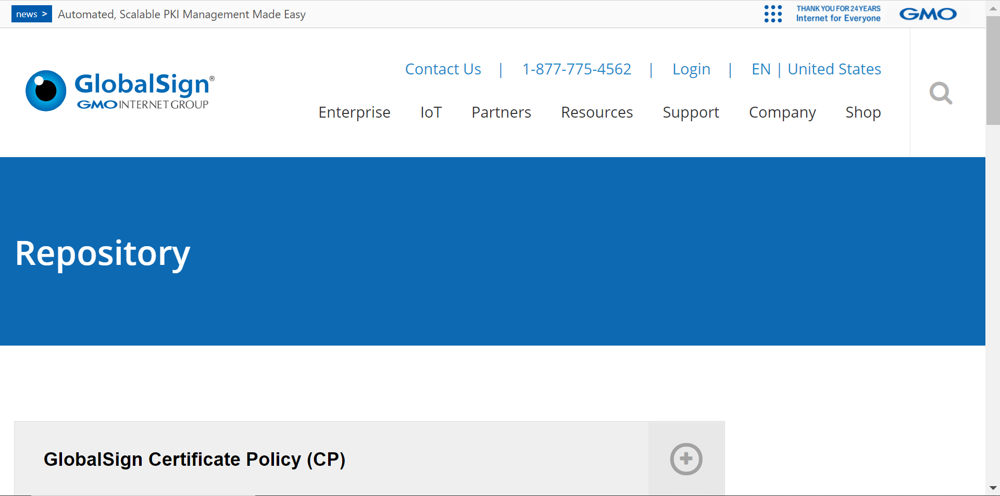
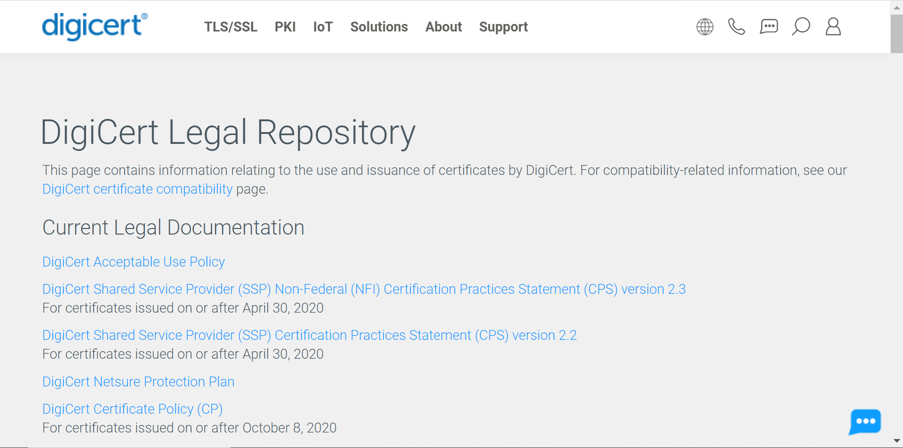
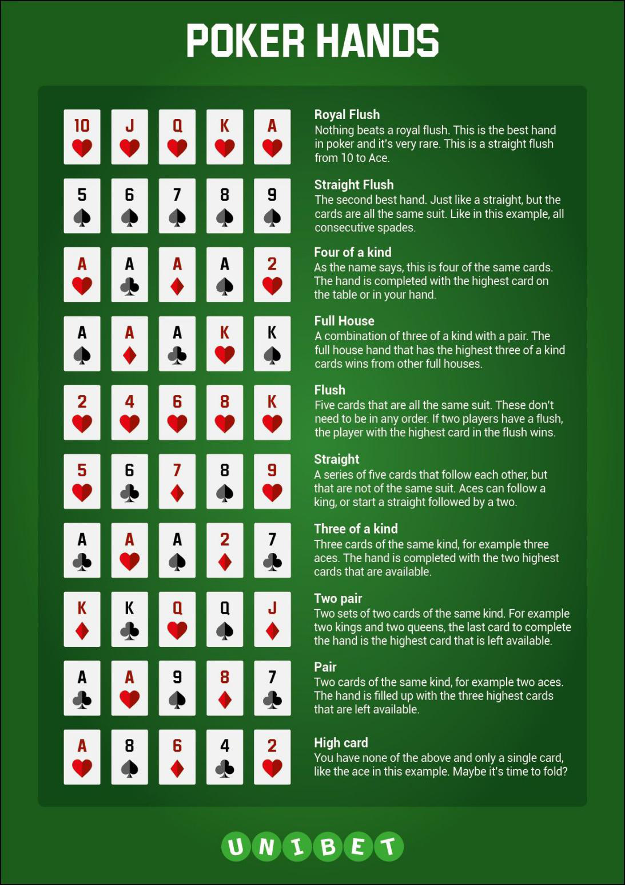

The introduction of SSL
Date: October 16th 2020; Author: Qingming Li
What are SSL and TLS?
Secure sockets layer(SSL) is a standard security technology protocol, which establishes an encrypted link between a server and a client, specifically a web server(website) and a browser, or a mail server and a mail client. SSL describes algorithms details of encryption. In this case, the SSL protocol determines the algorithms of the encryption for both the link and the data being transmitted.
The SSL protocol has always been used to encrypt and secure transmitted data. Each time a new and more secure version was released, only the version number was altered to reflect the change(e.g. SSLv2.0). However, when the time came to update from SSL v3.0, instead of calling the new version SSLv4.0, it was renamed Transport Layer Security(TLS)v1.0. we currently on TLSv1.2. Because SSL is still the better known, more commonly used term, many security authorities still use SSL when referring to certificates or describing how transmitted data is secured.
How can I say that my webpage is secure?
When you're opening a web page, you can see the level of encryption that the website server and browser adopt to transfer information. The color of the icon will change based on the level of encryption. There are three kind of encryption level as follow:
Green (S/MIME enhanced encryption). Suitable for your most sensitive information. S/MIME encrypts all outgoing messages if we have the recipient's public key. Only the recipient with the corresponding private key can decrypt this message.
Gray (TLS - standard encryption). Suitable for most messages. TLS (Transport Layer Security) is used for messages exchanged with other email services that don't support S/MIME. However, TLS support is not guaranteed. Support is inferred from past communications with the wbepage server.
Red (no encryption). Unencrypted webpages are not secure.
Moreover, you can open the web developer options, and you can find the details about security that tell you which SSL certificate does your webpage use, which security authority provides the service for your webpage and when the security service will expire. The picture below shows that www.google.com is secure and the details about certificate authority.
Do the prefixes HTTP or HTTPS matter when we're talking about secure web sites?
You have ever found that some URLs start with http://, while some start with https://. Actually they are quite different. Especially when you are browsing websites that require sensitive information, the extra “s” will show up. The extra “s” stands for SSL that means your connection to that website is secure and encrypted and data you enter and information from the website server are safely shared with the server and you.
What is an SSL certificate authority?
TLS typically relies on a set of trusted third-party certificate authorities to establish the authenticity of certificates. Trust is usually anchored in a list of certificates distributed with user agent software, and can be modified by the relying party. Based on the information I have searched , DigiCert, GlobalSign and GTS CA 101 are the famous 3 certificate authorities. GlobalSign provides the security service for https//:www.taobao.com that is the biggest e-commerce in China; DigiCert provides the security service for amazon; and the google has their own security authority, GTS CA 101.
 What information do I need/want to be secured?
Normally, data sent between browsers and web servers is sent in plain text—leaving you vulnerable to eavesdropping. If an attacker can intercept all data being sent between a browser and a web server, they can see and use that information. Actually, all of the sensitive information such as credit card numbers, social security numbers, and login credentials should be secured and transmitted securely.
Reference
Jeffrey, V. (2020, June). A Beginner's Guide to SSL: What It is & Why It Makes Your Website More Secure. https://blog.hubspot.com/marketing/what-is-ssl
Transport Layer Security. ( 2020, October 18) . In Wikipedia. https://en.wikipedia.org/wiki/Transport_Layer_Security#cite_note-45
What is an SSL certificate? (n.d.). Digicert. Retrieved October 18, 2020, from https://www.digicert.com/ssl/
How to avoid your password being stolen
Date: October 23th 2020; Author: Qingming Li
Just like going to a clinic or visiting a health provider, the doctor need to know what problems happened in our body before giving a prescription. Similarly, before I give solutions to how to avoid your password being stolen, I would show you the process of your passwords being stolen.
1.The process of your password being stolen
To approach the goal of stealing a password, an hacker will normally use a dictionary attack tool. This attack tool will try to login numerous times with many passwords. The tool will attempt every password until finding the right one. Now, the attacker can log in your accounts and install a backdoor which can send your personal or confidential information to hacker.
Since hackers need to try different possible password on your account to find out the correct one and hackers cannot write a piece of code to steal your password directly, the another effective constraint that many tech giants are using wildly today is to limit the amount of password attempts. However this will slow down the attack, but cannot stop the attack occurring.
The device that the hacker use and whether it is an offline attack or an online attack will determine how fast the process of your password being stolen and if the hacker can be successful finally. Normally, a simple password can be hacked in a matter of minutes. This is the right reason why using complex and unique passwords is vital to protect your account security on your part.
2.The recommendation of passwords management strategies
Based on the hacking process above, the best passwords will not have any obvious combination of numbers or letters. That means most easy-to-remember passwords with names, words, and dates won’t cut it. If you can read the password as a word or phrase, a hacker using automated tools will be able to guess it. A good password is much more complex.
To make a password more complex, you will think that more characters gives a password a lower chance of being guessed in a dictionary attack. In addition, the mixture of lower- and uppercase letters, numbers, and characters is also recommended. The most secure password will also need to be completely unique. The best passwords should look like a random string of characters, numbers, and symbols. Passwords should never be reused on multiple accounts for different functions, which will increase the chances of a hacker being able to gain further access with the same credentials.
But the good news is that keeping complex passwords is not difficult. Actually, a password manager can easily solve your problems. The browsers and mobile operating systems offer the password managers to remember your username and password for different accounts when you set up an account through the browsers. However, the optimal means is to use a third-party manager even though it may cost some money. A third-part password manager is a service that generates unique, complex passwords and saves them in a secure vault. It makes keeping your passwords secure much easier.
It’s worth paying a few dollars a month. Because that’s a small price to pay when compared to the lost of passwords’ being stolen.
Reference
Password Rules are bullshit. (10, March, 2017). Retrived from: https://blog.codinghorror.com/password-rules-are-bullshit/
Justin C. (December 26, 2019).How Passwords Get Hacked. Retrived from: https://securityboulevard.com/2019/12/how-passwords-get-hacked/
The introduction to HTML and CSS
Date: October 30th 2020; Author: Qingming Li
As a front-end developer, you have to be familiar with and master the function of HTML, CSS and Javascript. They are the most basic and powerful tools that you need to manipulate the web pages. Today I am going to give you some fundamental introductions of the HTML and CSS.
HTML
First of all, what is HTML? HTML is the short of Hyper Text Markup Language, which is the language that developer use to create the every component of a web page. Moreover, the every component of web page is called of element.
An element consists of tag and attributes. Normally element is the basic unit in a web page, and every items that you can see from a web page can be found as an element in HTML document. Also, the elements wrote by HTML are hierarchically organized like directory. The root element looks like (<html>…</html>), which is the most basic element in HTML document and enclosed within the starting tag and closing tag. Head element ( <head>…</head> ) and body element ( <body>…</body> ) are the necessary elements in this basic element. Head element includes the title element ( <title>…</title> ) which will be shown in the browser and other configuration information of the web page. Body element wraps up all the things in the web page. There are a bunch of elements that can be components in body element, such as:
<header>,
<main>,
<footer>,
<section>,
<div>,
<span>,
<p>,
<img>,
<ul>,
<li>,
<form>,
<table>, etc.
Those elements serve as frames or content of the web page. The attribute of an element provides more detail information about the element.An example of an attribute is:
<img src="mydog.jpg" alt="A photo of my dog.">
In this instance, the image source (src) and the alt text (alt) are attributes of the <img> tag.
In terms of the inline element and the block element, it refers to the width that an element would occupy in the browser. The block element occupy the whole width of the browser, while the inline element just take up of the width that they needs.
CSS
Basically the HTML document provide what should be presented to clients or browser, The CSS will determine how those context should be presented. CSS means Cascading Style Sheets. CSS covers fonts, colors, margins, lines, height, width, background images, positions and many other things. Actually we can also add the style attribute to the element to decide how this element should be presented or insert style element( <style>…</style> ) to define how the whole web page should be presented. But CSS provides a method that we can fulfill this purpose from external of HTML document.
The basic CSS syntax is “selector { property: value; } ”. the selector refers to the elements that you want to style and the property can be the characteristic you want to define such as font and background color. The value is the specific value of the property you want to assign.
Reference
HTML For Beginners The Easy Way: Start Learning HTML & CSS Today. https://html.com/#What_is_HTML;
CSS: Cascading Style Sheets. https://developer.mozilla.org/en-US/docs/Web/CSS;
The strategies of Texas Hold’ Em for beginners
Date: November 6th 2020; Author: Qingming Li
Texas Hold’ Em is one of the most popular poker games in the world, especially in North America and many legal casinos. We can watch many famous competitions from television. Compared with many casino gambling games that are just full of chance and luck, The reason why people love to playing Texas Hold’ Em is that the game requires the player to possess the ability of calculating odds, covering your real emotions and the ability of reading others through the minor reactions. Certainly I am not going to tell you how to win a huge prize or a fortune. I just want to share with you some takeaways that you can employ at friends or family gathering occasions. You don’t have to always play the role to lose money as I ever did. The table as followed is there for you to recall the most important criteria - hand rankings combination.
As a beginner I always need to check if a full house can beat a flush, and the answer is definite. So it is important to remember them clearly. If you have no idea of what Texas Hold’ Em is or it is your first time to hear of Texas Hold’ Em, you can check the basic rules through (https://www.casinogamblingstrategy.org/poker/texas-holdem/).
Rule No. 1 : Evaluate yourself
Normally when you get the first two cards you are starting evaluating yourself. Strong cards are obvious. You do not necessarily hesitate to call or rise, if you get one of those cards as below:
- AA
- KK
- JJ
- AK( if there are the same suit. )
If you are an aggressive player, you are possible to rise a bet. In another scenario if you are an expert to bluff, you need to act like that your huge bet is just bluffing rather than holding the strong hands, Because conveying mistake information to opponents will give them entice to battle with you and finally your strong hands will pay off; if you are conservative or just trying to cover yourself, you are likely to check or call your right-hand player.
Moreover, whether your cars are strong hands depends on how many players are involved in. You might consider to call when holding an Aces and a face card or a pair less than 10 or two sequential cards with the same suit , if there are just 3 players including yourself or if the big blind is not too much high.
Rule No. 2 : Read your opponents
Basically facing different opponent you should employ different strategy, and you cannot use the same strategy in all occasions. So reading your opponent and distinguish what type are your opponents is vitally important.
Even through every player know the necessity to hide themselves and perform emotionless, in the practice it is impossible. You can stand at a favor place if you have some ideas about your opponents. Basically a good hand makes players performed easily and satisfied while a player might be sighing and holding their fist tightly when he holds a bad hand. In addition, you also need to distinguish which players like to bet big and who plays a tight game, etc.
Rule No. 3 : Fold at the right time
As I mentioned above, you might got a comparatively weak hand in an early position and your cards holds the possibility to form a flush or straight even full house. But remember that folding weak hand and waiting until you have a strong is the strategy for winning Texas Hold’ Em. Do not be sucker. It is proper time to fold to minimize your lose and survive in the game when you face the delimma as follow:
- When you face with other players’ raising and you already called several rounds, but you don’t have a strong hand, the best choice is to fold. In this minute, considering the money you already pored in is not wise.
- When you need to call other players’ raising to stay in the game and you have a bad hand, that could be best time to fold.
In another case, intimidation is your strategy and you raise your bet every round. Your performance might convey to your opponents the idea that you are definitely a strong hand, no mater what your cards are actually. That will be other story. But as a beginner I do not recommend you this strategy. This strategy need the combination of other skills, such as reading your opponent correctly and guessing that your opponents’ cards are not weak, meanwhile, not strong enough. Once your opponent is a strong hand, it means that you are taking a huge risk to intimidate.
Rule No. 4 : Keep a good mindset
Playing Texas Hold’ Em consumed a lot of your time and energy, because you always need to figure out if you should call or give a raise and guess what the cards are in your opponents’ hands. So you should focus absolute concentration on the game. Your judgement will be impaired and compromised if you are suffering from bad mindset and sleep deprivation. You could continue staying in the table and playing if you can concentrate your focus and you can make reasonable decisions. Nevertheless, when you are the slave of your emotion and distracted by other things, it is the right time to take a break.
Finally I wish you guys have a good luck in this interesting game either for fun or for money.
Reference
Poker, Anyone? ( 2018, June 14 ). Retrieved from: https://blog.traditionsofamerica.com/poker-anyone/
Texas Hold’ Em strategy for 2020 - the best tips to win more. Retrieved from: https://www.mypokercoaching.com/texas-holdem-strategy-tips/
How to play Texas Hold’ Em in a casino. Retrieved from: https://www.casinogamblingstrategy.org/poker/texas-holdem/